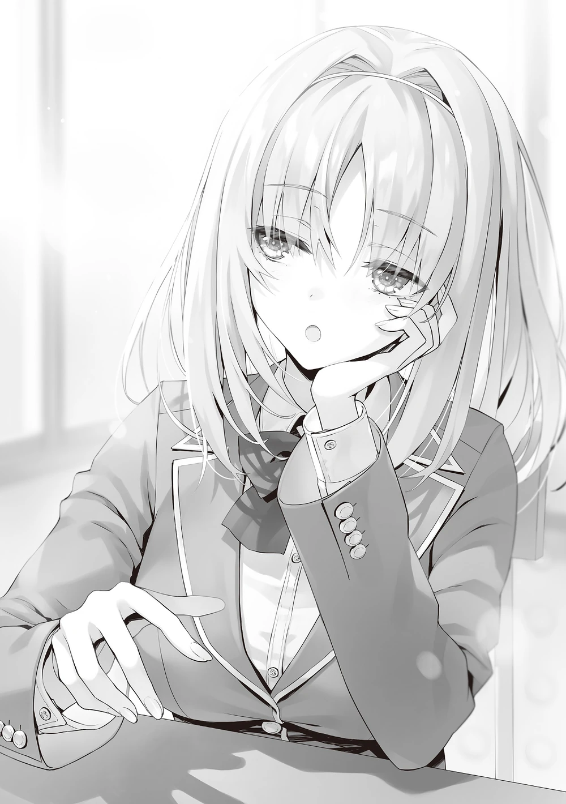

Birkaç dakika içinde, Sakagami-sensei 11. turun başlangıcını işaret edecekti, ancak Horikita hâlâ kürsüde durarak öğrencilerin dikkatini topluyordu.
“A sınıfı gerçekten zorlu bir rakip. İlk yarının tümünde zirvede kaldılar. Ama buna daha fazla odaklanmamamız ve özel sınava daha güçlü bir şekilde devam etmemiz lazım. Sonuçta puan kazanmamızın en kolay ve güvenli yolu soruları doğru cevaplamamız.”
Horikita’nın saldırı yapacağı sınıf, sınıfların en güçlüsü olan Sakayanagi’nin sınıfıydı.
İlk yarıda, Ryūen’in saldırılarına karşı başarıyla savunma yapmış ve öğrenciler yüksek bir doğru cevap oranı yakalamıştı.
“Nasıl saldıracağız?”
Sudō’nun masumca sorduğu soruya karşılık olarak, Horikita sınıftaki öğrencileri taradı.
Burada Sakayanagi ile bağlantılı biri olabilirdi. Bu yüzden, stratejisini dikkatsizce açıklayamazdı.
“Hazırlık sürecinde sizden fikirlerinizi istediğimi hatırlıyor musunuz? O bilgileri düzenledim ve bir açık bulduğumu düşünüyorum.”
Basitlik en iyisiydi.
Görünüşe göre, rakibin düşüncelerini okumaya çalışmaktansa bireysel zayıflıkları hedef alan bir yöntem tercih ediyordu.
Ancak Ichinose’nin sınıfına kıyasla, bilgiler daha az görünüyordu. Bu özel sınavın duyurulmasından itibaren, sızıntıları önlemek adına sıkı bir şekilde kontrol altında tutulmuş olmalıydı.
Bu durumda, herkesin güçlü ve zayıf yönlerini öğrenmek kolay olmayacaktı.
Horikita’nın tüm bu istihbaratla oluşturduğu stratejisinin gerçek kapasitesini sadece o biliyordu.
11. turda, Horikita Sakayanagi’nin sınıfına ilk saldırısını gerçekleştirdi.
Horikita başlangıç olarak bir puan kullandı ve zorluk seviyesi iki olan bir ‘Edebiyat’ sorusu seçti.
Ne yazık ki, A sınıfından bir kişi başarılı bir şekilde korundu ancak zorlayıcı soru karşısında korunamayan 4 öğrencinin üçü yanlış cevap verdi ve 2 puan kazandık.
Kullanılan puanları düştüğümüzde, üç puan almak durumu eşitler, dört veya daha fazla puan almak ise bu turda fazladan kazanç sağlardı.
Saldırı sırası, Sakayanagi’nin sınıfına geldi.
Ve Sakayanagi beklenmedik bir şekilde iki puan harcayarak zorluk seviyesi üç olan bir ‘Spor’ sorusu seçti.
Alt sırada yer alan Ryūen’e karşı acımasızca saldırmayı amaçladığını gösterdi.
“O gerçekten Ryūen-kun’u köşeye sıkıştırmaya çalışıyor… Ne kadar cesur.”
İkinci yarı, B sınıfı’nın puanını umursamadan farklı bir şekilde başladı.
Ancak hemen ardından, ekrandaki sonuç sınıfta şaşkınlık dolu bir tepkiye neden oldu.
Savunmada Başarıyla Korunan Üyeler:
Katsuragi Kōhei, Shiina Hiyori, Tokitō Hiroya, Nomura Yūji, Ibuki Mio
Bu özel sınavda, koruma alanında ilk kez mükemmel bir skor elde edilerek tam beş puan güvence altına alındı.
Herkes korunduğunda, zorluk seviyesi üç olan bir soru anlamını yitiriyordu. Bu ağır bir darbeydi.
Öte yandan, geride kalan Ryūen hızla 24 puana ulaştı ve geçici olarak Ichinose ile eşitlendi.
“Şu ana kadar dört elenmeleri var, ancak bu… Bu gerçek olamayacak kadar iyi.”
Pek çok kişi onların geride kalacağını düşündüğünden, bu sonuç kesinlikle büyük bir şok yaratmış olmalıydı.
Görünüşe göre ivme devam edecekti, ancak Ryūen’in Ichinose’nin sınıfına yaptığı saldırı beklenildiği kadar sert olmadı, çünkü üç kişi korundu.
Ancak bir kişi soruyu yanlış yaptı, bu yüzden toplam puan 28’de kaldı.
Şimdi geriye sadece bizim sınıfın savunma turu kalmıştı. Gerçekten de, Ichinose’nin hangi kategoriyi seçeceğini ve kimi hedef alacağını merak ediyordum.
Kategori: Spor | Zorluk: 1
Savunmada Başarıyla Korunan Üyeler: Wang Mei-Yui, Shinohara Satsuki
Saldırıya Seçilenler: Ayanokōji Kiyotaka, Miyamoto Sōshi, Karuizawa Kei
Ichinose’nin ilk saldırı seçiminde benim adım vardı. Ve kasıtlı mı yoksa tesadüfen mi bilmiyorum ama Kei’nin adı da aynı anda seçildi.
Zorluk seviyesi bir olan ‘Spor’ sorusu çözülebilir bir seviyedeydi; ne bir avantaj ne de bir dezavantaj olarak görülebilirdi.
Eğer soru spor tarihi ya da kuralları ile ilgiliyse, bunu çözebileceğime emindim, ancak güncel olaylarla ilgili olursa, dezavantajlı duruma düşebilirdim.
Öte yandan, Kei televizyonda gördüğü küresel bir soruyu çözebilir. Daha önce düzenli olarak voleybol maçlarını izlediğinden bahsetmişti.
‘Beyzbol da bir veya daha az oyuncu dışarıda olduğunda, birinci ve ikinci bazda ya da birinci, ikinci ve üçüncü bazda koşucular varken, vurucu standart bir savunma hareketiyle bir iç saha uçan topu vurduğunda bu duruma ne ad verilir?’
Görünüşe göre bu soru kurallarla ilgiliydi.
Neyse ki, spor kurallarını bir noktaya kadar kafama kazımıştım, bu yüzden bunu zorlanmadan cevaplayabilirdim.
Doğru cevap ‘İç Saha Uçan Top’ idi.
Ancak, Kei’nin bunu bileceğinden şüpheliydim, Miyamoto’dan ise hiç bahsetmiyorum bile.
Son birkaç gün içinde bunu öğrenmiş olmasını ummaktan başka yapabileceğim bir şey yoktu…
Ne yazık ki, Kei soruyu yanlış yaptı. Ancak, bu onun ilk hatasıydı.
Durum henüz vahim değildi, ama Kei yerine dönerken endişeli görünüyordu. Öte yandan, doğru cevabı veren Miyamoto, arkadaşlarıyla çak yaparak sevincini paylaşıyordu.
Duyduklarıma göre, beyzbol kurallarını oyunlardan öğrenmişti ve bugün bu bilgiler ona fazlasıyla yardımcı oluyordu.
Bilgi, beklenmedik yerlerde işe yarayabilirdi.
Böylece dört puan kazandık.
Geçici olarak Sakayanagi’nin sınıfını geride bırakıp birinci sıraya yükseldik.
Ardından 12. turda, Sakayanagi’nin sınıfı dört doğru cevapla istikrarlı bir şekilde dört puan kazandı, ancak sınıfı asıl şaşırtan yine Ryūen’in sınıfı oldu.
Sanki bir tekrar izliyormuşuz gibi, başarılı koruma listesindeki beş isim yeniden sıralandı.
Başka bir deyişle, sadece koruma alanından aldıkları puanlarla üst üste ikinci kez tam puan elde ettiler.
“Bu nasıl bir ihtimal!? Çok şanslılar!?”
Ryūen’in sınıfının en altta olacağını düşünmüş gibi görünen Ike, başını tutarak çığlık attı.
“…Bunu sadece şans olarak görmemiz mümkün mü, merak ediyorum.”
Yanımda duran Horikita’nın, ekrana sakin bir şekilde bakarken sesindeki ağırlığı duyabiliyordum.
Bu da gayet anlaşılır bir durumdu.
Çünkü üst üste iki kez mükemmel bir savunma yapmayı başarmışlardı ve bu, inanılmaz derecede düşük bir olasılıktı.
Eğer bir sonraki turda bir kez daha mükemmel bir seçim yaparlarla…
Şaşkınlık içindeki bu atmosferde, Ichinose’nin sınıfına yapılan saldırıda iki kişi korunmuş, iki kişi de doğru cevap vermişti.
Şimdi ise saldırı sırası Ichinose’ye gelmişti.
Savunmada Başarıyla Korunan Üyeler: Ishikura Kayoko, Sudō Ken
Saldırıya Seçilenler: Ayanokōji Kiyotaka, Matsushita Chiaki, Karuizawa Kei
Benim ve Kei’nin adı ikinci kez üst üste anons edildi.
Adını görür görmez, Kei bir anda yerinden fırladı ve bariz bir şekilde paniğe kapılmış bir sesle bağırdı:
“Beni hedef almıyorlar, değil mi!?”
“Sakin ol. Üst üste iki kez seçilmiş olmamız, özellikle hedef alındığımız anlamına gelmez.”
“A-ama…!”
Kei’nin paniklemesi anlaşılır bir durumdu.
Eğer Ichinose yalnızca zayıf rakipleri hedef alıyorsa, bu bizim için daha iyi olurdu.
Ancak, karşımızdaki kişi Ichinose’ydi.
Bu durumda, seçilme sebebinin kişisel bir gerekçeye dayandığını düşünmesi kaçınılmazdı.
Benim de adaylar arasında yer almam, bu şüpheyi daha da güçlendiriyordu…
Sebebi kişisel bir mesele olsun ya da olmasın, bunu bir provokasyon olarak değerlendirmek mantıklıydı.
Yine de bu, sağlam bir hamleydi.
Horikita, değerli koruma hakkını benim için kullanmamıştı.
Muhtemelen bu stratejiyi önceden tahmin etmişti.
Eğer kategori akademik bir konu olsaydı, Kei korunabilirdi.
Ancak kategori ‘Haberler’di.
Bu, Kei’nin bile doğru cevap verebileceği bir alan olduğundan, onu korumamak mantıklıydı.
Öte yandan, ben daha dikkatli olmalıydım. Çünkü aynı kategoride daha önce bir soru kaçırmıştım.
‘Tapiru’ ne anlama gelir?
Soruyu görür görmez donup kaldım.
Ne…?
Huh…?
Bu da ne?
Tapiru?
Tapi…?
Donup kalmış bir haldeyken süre doldu ve hiçbir cevap yazamadan elim kolum bağlı kaldım.
Diğer öğrencilerin ‘Haberler’ kategorisinde aldığı sorular genellikle siyaset veya yıllık olaylarla ilgiliydi.
Neden sıra bana geldiğinde bu kadar beklenmedik bir soru çıkıyordu?
Bu zorlayıcı soru nedeniyle, bu kez hata yapan ben oldu ve doğru cevap veren kişi Kei oldu.
Neyse ki, yenilgi eşiğine gelmemiştik ve en azından şimdilik sakinleşebildik.
Matsushita’nın da doğru cevabı verdiği belliydi, böylece dört puan kazanılmış oldu.
Öte yandan, iki hata yapmam nedeniyle bir anda elenme adayı haline gelmiştim.
Bu arada, doğru cevap “tapioka incileriyle yapılan bir içecek içmek” gibi bir anlama geliyormuş.
“Sen… Dünyadan sandığımdan daha az mı haberdarsın?”
Yerime döndüğüm anda, Horikita’nın küçümseyici bir bakışla yaptığı yorumu sessizce kabullenmek zorunda kaldım ve sırtımı hafifçe bükerek geri çekildim.
Ve şimdi Horikita’nın sınıfının 13. tur saldırısı başlıyordu.
Kategori ‘Kanji’, zorluk seviyesi 1 olarak seçilmişti.
Ancak, beni asıl şaşırtan şey Horikita’nın sözlerinin aniden kesilmesiydi.
Dördüncü kişiye kadar adayları sorunsuz bir şekilde belirlemişti, ancak beşinci kişi için duraksamış görünüyordu. Bu noktada, zihnindeki bilgileri düzgün bir şekilde sıralamak da ayrı bir zorluktu. Kim hangi konuda iyiydi, kim hangi konuda zayıftı? Belki de A sınıfı hakkında sahip olduğu değerli bilgileri erken tüketmişti. Hâlâ zaman vardı. Horikita derin bir nefes alarak kendini sakinleştirdi. Ve ardından beklenmedik bir yardım eli uzandı.

“Neden Satonaka’yı seçmiyorsun?”
Sıkılmış görünen bir öğrenci, kayıtsız bir şekilde mırıldandı. Bu kişi, özel sınav boyunca tek bir kez bile seçilmemiş ve fazlasıyla boş vakti olan Kushida’ydı.
“Teşekkür ederim, Kushida-san. O halde, Sensei, son kişinin Satonaka-kun olmasını istiyorum.”
Horikita, nedenini bile sormadan tamamen onun tavsiyesine güvendi. Sonuç olarak, Satonaka korunmadı ve yanlış cevap verdi.
“Onun kanji konusunda zorlandığını nereden öğrendin?”
Makida, hayranlıkla alkışladı.
“Böyle bilgiler her yerden gelir.”
Kushida, bunu büyük bir mesele değilmiş gibi söyleyerek bakışlarını kayıtsızca başka bir yere çevirdi.
“Çok yardımcı oldun. Teşekkür ederim.”
“Pek de sayılmaz.”
Horikita’nın teşekkürlerine rağmen, Kushida pek de memnun görünmüyordu. Ancak, sınıftaki konumu pek iyi olmadığından, böyle gözle görülür bir katkı sağlaması onun için kötü bir şey değildi.
Horikita’nın, sınavın ikinci yarısına daha özgüvenli bir şekilde meydan okuyabilmesini sağlayan şeylerden biri de buydu.
Kushida Kikyō’nun sahip olduğu değerli bilgi ağı.
Sadece geniş bir arkadaş çevresine sahip olmakla kalmıyor, aynı zamanda rakiplerinin zayıflıkları hakkında sürekli bilgi topluyordu. Bu yüzden, rakiplerinin zayıf yönlerini ezberleme konusunda olağanüstü bir yeteneğe sahipti. Henüz tüm kozlarını oynamamış olsa da, muhtemelen Horikita’ya önceden bir çok bilgi sağlamıştı. Gerçekten güven veren bir varlıktı.
13. turda Ichinose’nin saldırısı geldi. Bu, bizim üçüncü savunma turumuzdu ve bu kez Horikita, Karuizawa’yı korumayı seçti. Bana ise koruma hakkı verilmemişti. Ancak Horikita’nın tahmini doğru çıkmış gibi görünüyordu, çünkü Karuizawa Kei’nin ismi “Başarıyla Korunan Üyeler” arasında yer aldı.
Normalde soru çözmekten kaçınabildiği için mutlu olurdu, ancak Kei’nin yüzü solgun görünüyordu.
“Beni elemeye mi çalışıyorlar…!? Hedef benmişim gibi görünür!?”
“Olabilir… Biraz fazla üst üste oldu.”
Satō da ona katıldı. Ancak bu tür yanlış anlamalar gereksiz karmaşaya yol açardı.
“O öyle biri değil. Özellikle birini hedef almak gibi bir huyu yok.”
“Ama bu çünkü…!”
Kei, durumu bilmedikleri için böyle düşündüklerini söylemek üzereydi ama kendini tuttu.
“Her neyse, onların amacı ne bilmiyoruz ama koruma başarılı olduğuna göre, muhtemelen bir sonraki turda hedeflerini değiştireceklerdir.”
“…Evet…”
“Ama üst üste üç kez aday gösterilmek biraz fazla dikkat çekici. İlk yarıda Kōenji-kun’un hedef alındığı zamanki gibi. Acaba Ichinose-san ne düşünüyor?”
Ichinose’nin saldırısı 14. turda tekrar geldi.
“…Ne yapmalıyız?”
Horikita, kimleri koruyacağını seçme konusunda tedirgin görünüyordu. Ne olursa olsun, Kei’nin dördüncü kez üst üste seçilme olasılığı düşüktü. Acaba durumu bu açıdan mı ele almalıydı yoksa durumu bu açıdan ele alması Ichinose’nin planları arasında mıydı?
“Onu bir kez daha savunmayı denesek mi? Bence bu kez de hedef alabilir.”
Kushida, düşüncelere dalmış Horikita’ya bir öneride bulundu.
“Bunu şu ana kadarki akıştan mı düşünüyorsun?”
“Hayır, pek değil. Sadece Ichinose-san’ı şimdiye kadar gözlemlediğim kadarıyla böyle düşündüm.”
Kushida, kararını seçimlerin gidişatına göre değil, Ichinose Honami’nin düşünce tarzındaki işaretleri sezerek vermişti.
“Bu doğru. Bir kez daha savunmak en iyisi olabilir.”
Kei henüz elenmenin eşiğinde değildi, ancak eğer onu hedef alıyorlarsa, puan kazanmak isteyeceklerdi. Sonunda başarılı koruma listesi açıklandı ve Kei’nin adı bir kez daha oradaydı.
Böylece bu özel sınavda dört kez üst üste aday gösterilerek Kōenji’nin üç tur üst üste seçilme rekorunu kırmış oldu. Bunda bazı açıklanamayan noktalar vardı, ancak diğer sınıflara karşı mücadeleyi kaybetmemek iyi bir şeydi.
Ancak durum giderek kötüleşmeye başlıyordu.
Hem Horikita’nın hem de Sakayanagi’nin sınıfları, saldırı ve savunmayı dengeli bir şekilde kullanarak puan kazanıyorlardı. Ancak, ikinci yarıda Ichinose’nin sınıfı da yüksek bir koruma başarısı oranına sahipti.
Öte yandan, Ryūen’in sınıfı çok daha büyük bir ivme kazanmıştı.
Sakayanagi, sıra dışı kategoriler ve aday seçimleri yaparak karşılık vermeye çalışsa da, durum düzelmiyordu. Çünkü dört tur üst üste mükemmel bir koruma sonucu almayı başarmışlardı. Artık bu durumu sadece şansla açıklamak mümkün değildi.
Ancak bu durumda, Horikita’nın yapabileceği başka bir şey yoktu. Tek yapması gereken sakin ve istikrarlı bir şekilde puan toplamaya devam etmekti.